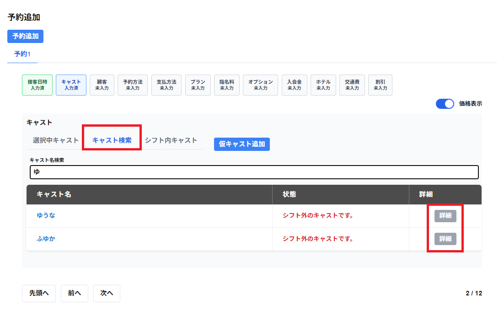

キャスト検索の選択のタブには以下の項目が表示されます。
・キャスト名検索
入力した文字の含むキャストが一覧で以下の項目が表示されます。
※選択中キャストは表示されません。
・キャスト名
キャスト名が表示されます。
・状態
キャストの状態が表示されます。
※シフト外の場合「シフト外のキャストです。」と表示されます
※予約・接客・休憩と重複している場合は「21:00～22:30の予約(接客・休憩)と重複しています」と表示されます
・詳細
詳細を確認したいキャストの行の詳細をクリックすると、予定一覧の画面が表示され、日付別に以下の項目が一覧で表示されます。
・種別
予定の種別が表示されます。
・日時
日付別毎に日時が表示されます。
選択をしたいキャストの行をクリックすると、キャストを選択することができます。
選択したキャストは選択中キャストの選択のタブに表示されます。
